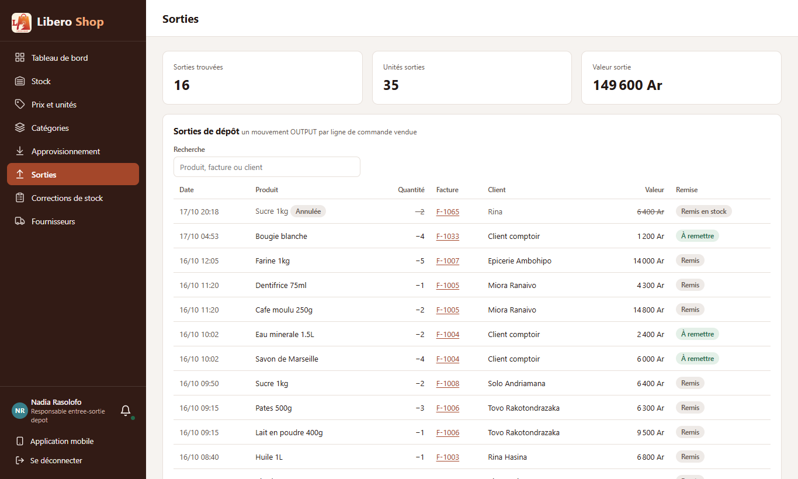
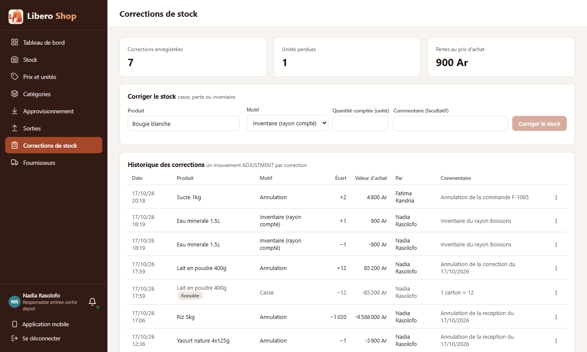

Annulation de commande : contre-passer au lieu d'effacer
- Une commande annulée avant la remise ne supprime plus ses sorties de stock : elles restent, marquées « Annulée ».
- Le stock revient par une correction inverse « Annulation de la commande F-1065 », visible dans les corrections et l'historique du produit.
- La page Sorties liste la ligne barrée, mais ne la compte plus dans les unités et la valeur sorties.
- Même principe que l'annulation d'une réception (rien n'est effacé, tout se lit dans l'historique).
1. Le problème
Quand une commande non remise était annulée, ses lignes de sortie étaient effacées de la base. Le stock revenait juste, mais l'historique du produit perdait la trace : on ne pouvait plus voir que deux sacs étaient sortis puis revenus, ni qui l'avait fait.
2. Ce qui a été fait
L'annulation passe par le service qui annule déjà les réceptions et les corrections
(MovementCancellationService.giveBackOrder) : une correction inverse par ligne, produits verrouillés dans
l'ordre pour ne pas bloquer une autre caisse, et les écrans prévenus que le stock a bougé. Les totaux de la page
Sorties ignorent les sorties annulées.
3. Le résultat en images
Nadia — responsable de dépôt (commande F-1065 créée puis annulée pour la capture)


4. À éviter / attendu
movements.deleteAll(outputs);output.setCancelledAt(now);
movements.save(correctionInverse); // « Annulation de la commande F-1065 »5. Tableau récapitulatif
| Fichier | Changement |
|---|---|
backend/…/service/MovementCancellationService.java | giveBackOrder : correction inverse par ligne, sortie marquée |
backend/…/service/InvoiceService.java | l'annulation passe par ce service ; plus d'effacement |
backend/…/repository/StockMovementRepository.java | totaux des sorties sans les sorties annulées |
backend/…/web/dto/StockOutputResponse.java, ui/…/stock-outputs.component.ts | date d'annulation, ligne barrée « Annulée » |
| Règle | Test |
|---|---|
| Commande annulée : la sortie reste, marquée ; correction inverse +3 avec le numéro de la commande | OrderCancellationStockTest |
| Sorties annulées listées mais hors des totaux | |
| Stock remis, commande sortie des files | ShopSettingsFlowTest (inchangé, vert) |
Tests : serveur au vert (638 tests), interface au vert (330 tests).